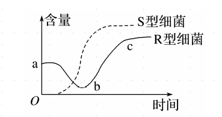
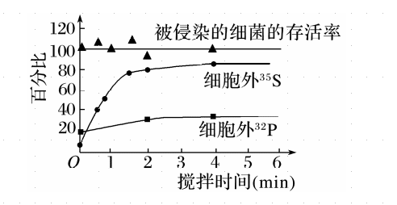

生物步步高17.DNA是主要的遗传物质
S 型菌落光滑，有多糖类荚膜、有毒。
R 型菌落粗糙，无多糖类荚膜、无毒。
格利菲思实验证明，加热杀死的 S 型细菌中含有“转化因子”，将无毒的 R 型活细菌转化为有毒的 S 型细菌。
格里菲斯的体内转化实验，艾弗里的[1]体外转化实验。
艾弗里的体外转化实验中，将 S 型细菌的 DNA 与 R 型活细菌混合培养，得到什么细菌？ R 型、S 型细菌。
判断：艾弗里的肺炎双球菌体外转化实验证明了 DNA 是主要的遗传物质。 错误。
判断：艾弗里的肺炎双球菌体外转化实验是通过观察菌落的形态来判断是否发生转化。 正确。
判断：加热杀死的 S 型细菌，其蛋白质变性失活。DNA 在加热过程中，双螺旋解开，氢键断开，但缓慢冷却时，其结构可恢复。 正确。
! !ab 段 R 型细菌减少的原因是？ 小鼠体内形成大量的抗 R 型细菌的抗体，致使 R 型细菌数量减少。
! !bc 段 R 型细菌增多的原因是？ b 之前，已有少量 R 型细菌转化为 S 型细菌，S 型细菌能降低小鼠的免疫力，造成 R 型细菌大量繁殖。
! !后期出现的大量 S 型细菌从何而来？ 由 R 型细菌转化成的 S 型细菌繁殖而来的。
判断：R 型细菌 DNA 与 S 型细菌混合置于培养基中培养，培养基中出现 R 型和 S 型菌落。 错误。
噬菌体侵染实验中，使用什么噬菌体？ T2 噬菌体。
合成 T2 噬菌体蛋白质的原料来自于？ 大肠杆菌的氨基酸。
合成 T2 噬菌体蛋白质的场所是？ 大肠杆菌的核糖体。
噬菌体侵染实验中，为什么选择 和 这两种同位素分别对蛋白质和 DNA 进行标记，而不用 和 进行标记？ S 是蛋白质的特征元素，P 是 DNA 的特征元素。 若用 14C 和 18O 进行标记，由于蛋白质和 DNA 都含有 C 和 O，因此无法判断被标记的是何种物质。
标记噬菌体的方法？ 在含有标记元素的细菌培养基中培养被标记的大肠杆菌。 加入噬菌体培养被标记的噬菌体。
噬菌体侵染细菌实验的结论是？ DNA 才是真正的遗传物质。
判断：分别用含有放射性同位素 和放射性同位素 的培养基培养噬菌体。 错误。
判断：噬菌体侵染细菌的实验能够证明 DNA 控制蛋白质的合成。 正确。
噬菌体侵染细菌实验中，搅拌、离心的目的是？ 把蛋白质外壳和细菌分开，再分别检测其放射性。
!噬菌体侵染细菌实验中： ! ! 图中被侵染的细菌的存活率基本保持在 100%，本组数据的意义是？ 作为对照组，以证明细菌未裂解。
!噬菌体侵染细菌实验中： ! ! 细胞外的 含量有 30%，原因是？ 有部分标记的噬菌体还没有侵染细菌。
!噬菌体侵染细菌实验中： ! ! 上清液中的 先增大后保持在 80% 左右，原因是？ 大约有 20% 的噬菌体没有与细菌分离。
噬菌体侵染大肠杆菌实验中，保温时间过短的影响？过长呢？ 部分噬菌体未侵染大肠杆菌。 部分噬菌体增殖后释放出来。 都导致上清液有放射性。
判断：艾弗里的肺炎双球菌体外转化实验和噬菌体侵染细菌实验都设法将 DNA 与其他物质分开，单独地、直接地研究它们各自不同的遗传功能。 正确。
判断：噬菌体侵染细菌实验证明 DNA 是遗传物质，蛋白质不是遗传物质。 错误，不能证明蛋白质不是遗传物质。
判断：艾弗里的肺炎双球菌体外转化实验证明 DNA 是遗传物质，而蛋白质等不是遗传物质。 正确。
判断：蔡斯和赫尔希实验结论是 DNA 是遗传物质，理由是 DNA 是亲子代之间保持连续的物质，并且还指导了蛋白质的合成。 正确。
DNA 是主要的遗传物质，理由是？ 因为绝大多数生物的遗传物质是 DNA，只有少部分生物的遗传物质是 RNA，所以说 DNA 是主要的遗传物质。
-
烟草花叶病毒对烟草叶细胞的感染实验
-
实验过程：从烟草花叶病毒中提取成分，感染烟草。
-
蛋白质：无病斑。
-
RNA：出现病斑。
-
RNA+RNA 酶：无病斑。
-
-
实验结论：RNA 是烟草花叶病毒的遗传物质，蛋白质不是烟草花叶病毒的遗传物质。
-
判断：只有细胞内的核酸才是携带遗传信息的物质。 错误，例如病毒。
判断：细胞生物遗传物质的基本组成单位是脱氧核糖核苷酸或核糖核苷酸。 错误，只是脱氧核糖核苷酸。
检测一种病毒是 DNA 病毒还是 RNA 病毒方法？ 将宿主细胞分别在含有放射性标记尿嘧啶、胸腺嘧啶的培养基中培养，用病毒侵染，一段时间后收集病毒并检测其放射性。
格里菲思实验的结论是？ 加热杀死的 S 型细菌中存在“转化因子”。
艾弗里实验的结论是？ DNA 才是使 R 型细菌产生稳定遗传变化的物质，即 DNA 是遗传物质。
判断：噬菌体外壳蛋白是大肠杆菌编码的。 错误，以噬菌体自身 DNA 为模板。
判断：T2 噬菌体也可以在肺炎双球菌中复制和增殖。 错误，只能大肠杆菌。